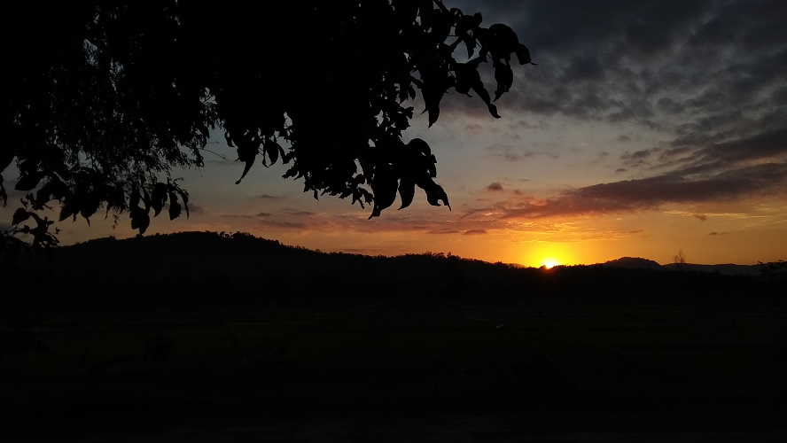

Tiadamu Tiadaku Dalam Raguku
Ditulis oleh Ahmad Zidni Zainul Ikhsan pada 28 Juli 2020

Dermaga laut membisu
Angin lepas tak terbendu
Membuang diri dalam pilu
Rajah dalam diri berdebu
Aku 'kan berprosa
Mengindentifikasi mawarnya
Walau 'kan tiada tara
Batas-batas indahnya
Kusut mata berdera
Rindu gejolak adinda
Menanti hadir wartanya
Walau hanya secercah tinta
'Ku ingin kau berasumsi
Hadirmu 'kan berarti
Dengan makna sejati
Karena tiadamu tiadaku
Berbagi cerita ialah candu
Berbagi pikiran ialah ramu
Keduanya ialah kamu
Tak tersua lagi olehku
Berikut ialah puisi saya yang dibuat saat hati saya dalam gundah gulana. Mendermaga di suatu kebingungan yang tak pasti ditemukan olehku sendiri. Ada terlalu banyak kosakata yang justru membuatnya buruk. Semoga besok lebih baik :)
Terima Kasih :D